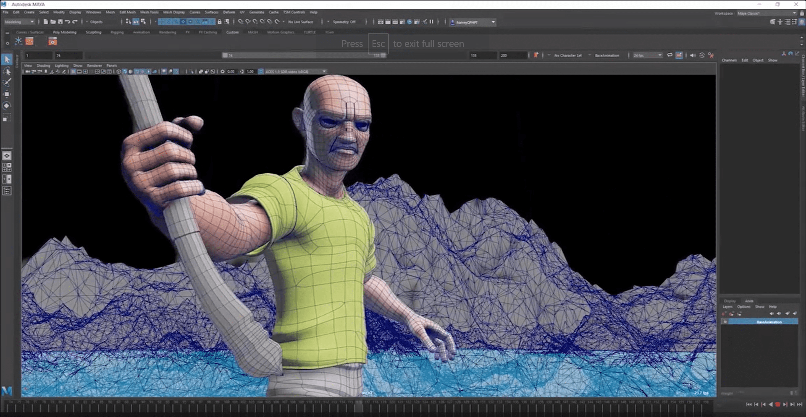

De nouvelles activités
Plonger plus profondément dans l'univers du cinéma avec des activités inédites.

Maquillage et Prothèses
Démonstrations et ateliers où les visiteurs peuvent apprendre les techniques de maquillage utilisées pour créer des personnages tel que le joker dans Batman the dark knight

Effets Pratiques
Ateliers montrant comment créer des effets spéciaux physiques, comme des explosions ou des blessures simulées.Utilisé comme exemple Transformers pour les explosions,ou comment dans le film Alien les blessures ont été produites.
Séminaires sur le scénario
Discussions sur l'écriture de scénarios avec des scénaristes professionnels. A travers une vidéo les différentes étapes lors de la création d’un scénario.